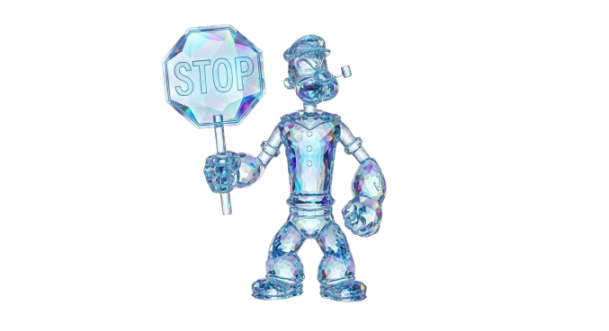

教學展示頁
固定案例前後對比與放大檢視
這個頁面會用固定參數與固定案例，示範不同影像處理主題的效果差異。 你可以先看同框對比，再進入 lightbox 以更大的視窗檢視細節。
展示模式
準備中
正在建立展示案例
系統會載入固定示範影像，並為各主題建立前後對比的固定案例。

一刻不停，創意不斷
教學展示頁
這個頁面會用固定參數與固定案例，示範不同影像處理主題的效果差異。 你可以先看同框對比，再進入 lightbox 以更大的視窗檢視細節。
準備中
系統會載入固定示範影像，並為各主題建立前後對比的固定案例。